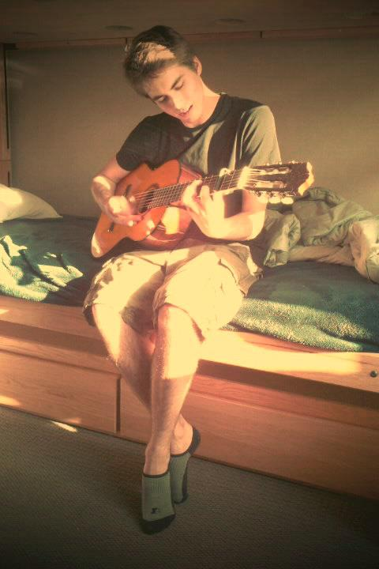

About Me

Colin was born in Rochester, NY in 1991 and moved to Davis, CA soon after. He began playing the drums at age 2. After high school, he attended the Brubeck Institute Fellowship jazz program in Stockton, CA. He then moved to Los Angeles to attend UCLA, and graduated summa cum laude in Cognitive Science with a Specialization in Computing in 2015. He has since been involved in neuroscience research and music. Recently, he started the Coding Boot Camp at UCLA Extension.
Colin's hobbies include listening to podcasts and audiobooks, watching movies, playing board games, and hanging out with friends. He also has an interest in filmmaking, and some of his films were screened at various film festivals around the country.